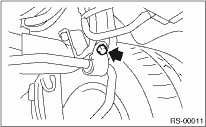
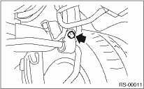

1. Lift the vehicle.
2. Remove the stabilizer link.

3. Remove the bolt which secures the stabilizer to the stabilizer bracket.

REAR SUSPENSION > Rear Stabilizer
1. Lift the vehicle.
2. Remove the stabilizer link.
3. Remove the bolt which secures the stabilizer to the stabilizer bracket.
